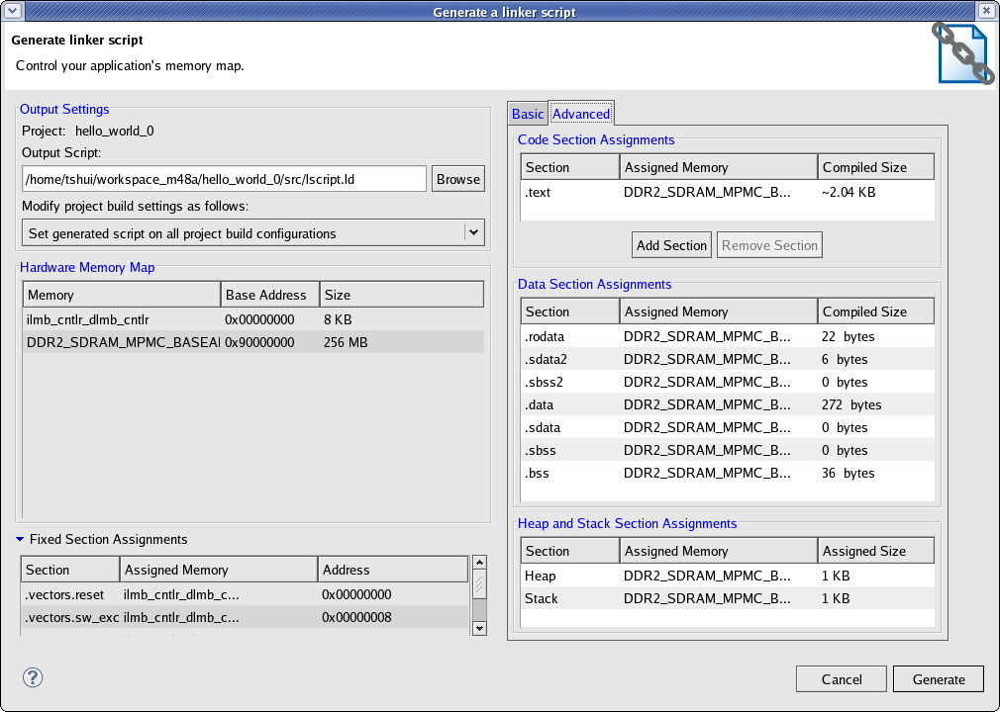

You can use the Generate a Linker Script dialog box to create a linker script for the software application. To open this dialog box, select the application project in the Project Navigator or C/C++ Projects view, and right-click Generate Linker Script.
Note: You can also open it by selecting Xilinx Tools > Generate Linker Script.

The Linker Script Generator dialog box contains the following functions:
| Name | Function |
|---|---|
| Output Settings | Control output options for linker script generation. |
|
Displays the name of the software application project. |
|
Specify the name of the generated linker script here. This linker script will be added to the linker option of the software application |
|
This drop-down list has two options: Set generated script on all project build configurations: Select this option to use the linker script with all build configurations, (for example, run, debug, and profile). Set generated script on project's active build configuration: Select this option to associate the linker script with the active configuration. |
| Hardware Memory Map | Displays the available memory in the system and its properties. This content is read-only. |
| Fixed Section Assignments | Displays the address location where the boot and vector sections have been assigned. This content is read-only. |
| Basic | The Basic tab allows you to quickly assign memory regions and define memory sizes. |
|
Select a memory region to which to assign all code sections. |
|
Select a memory region to which to assign all data sections. |
|
Select a memory region to which to assign the heap and stack. |
|
Specify the heap size. |
|
Specify the stack size. |
| Advanced | The Advanced tab gives you the flexibility to assign memory regions and define memory sizes with greater control. |
|
Name of the ELF file section. |
|
The memory region to which to map the ELF section. |
|
Size of the ELF file section. The value of this column for a data section is '0' if that section does not exist in the ELF file. |
Add Section |
Click this button to add a section to the ELF file. |
|
Click this button to delete the selection section from the ELF file. Note: Some sections are necessary for the ELF file and cannot be deleted. |

Creating a linker script
Adding the linker script manually
Copyright © 1995-2013 Xilinx, Inc. All rights reserved.